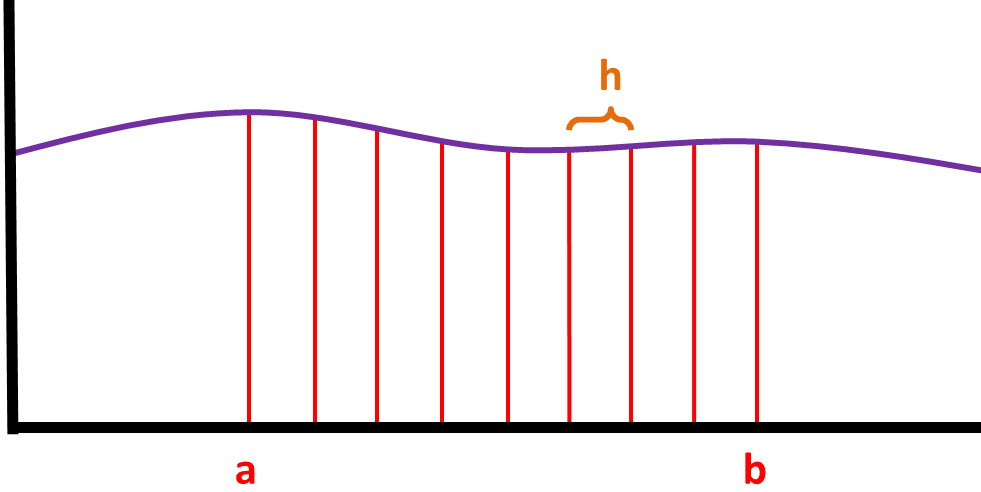

Before learning about the trapezium rule, you need to know the formula for the area of a trapezium, if you don't, then click here. Now let's start with this graph of [y = f(x)]:
Lets say we need to find the approximate area between a and b so we divided it into n equal strips, where each strip will be of width h:
Next we label the value of y for each value of x; the first one should be called y0, and the last one should be call yn:
We can take one of the strips and imagine it as a trapezium:
Finding the area of this trapezium will give us an approximate value of the actual area between a and [a + h]. We know that the area of this trapezium is [1/2 * h * (y0 + y1)], then that means the sum of the area of all the trapeziums would be:
We can take the h and 1/2 out:
All the y values, except for the first one and the last one are repeated twice, so that means we can simplify even further: